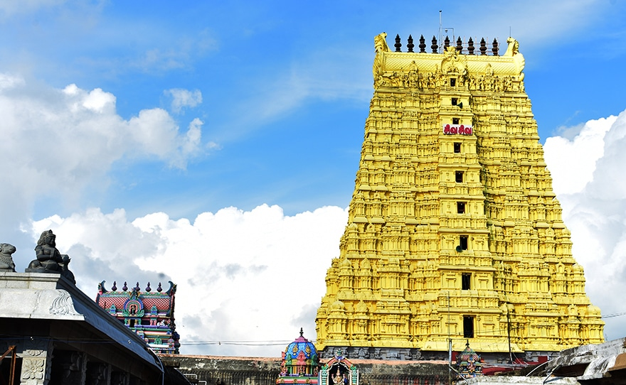
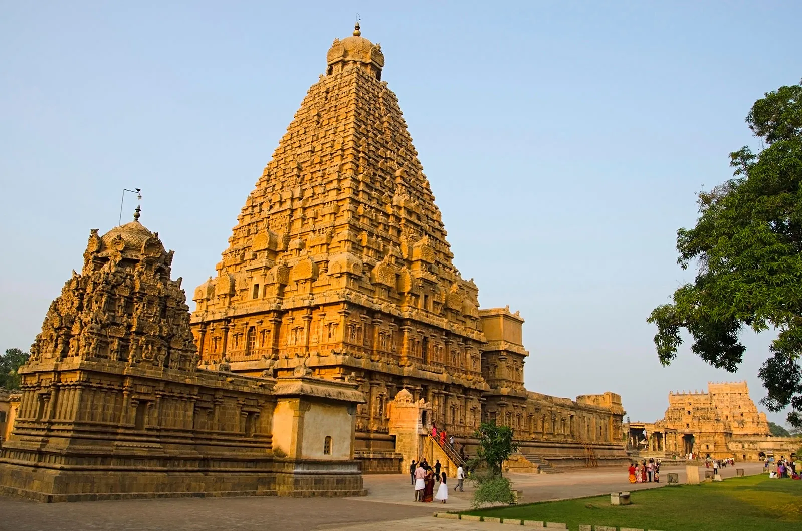
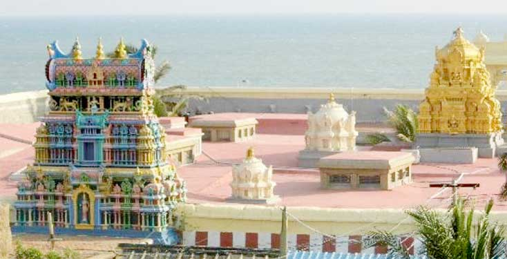

Temples and pilgrims in Tamil Nadu
The Meenakshi Amman Temple in Madurai

The Meenakshi Amman Temple in Madurai, Tamil Nadu, is a massive 14-acre Dravidian-style complex dedicated to Meenakshi (a form of Parvati) and Sundareshwarar (Shiva). Renowned for its 14 towering gopurams (gateways), including a 170-foot southern tower, and 33,000+ intricate sculptures, it is a major cultural landmark rebuilt primarily during the 16th-century Nayak dynasty.
- Key Tourist Information:
- Location: Center of Madurai City, Tamil Nadu.
- Best Time to Visit: Early morning or late evening to avoid heat, with the stunning Chithirai festival held in April/May.
- Timings: Generally open from 5:00 AM to 12:30 PM and 4:00 PM to 9:30 PM (timings may vary).
- Entry Fee: Free for general temple access; fees apply for special darshan and the Temple Art Museum.
- Entry Point: The East Tower is often recommended for easy access.
- Dress Code: Conservative clothing is required; shoulders and legs must be covered.
- Prohibitions: Cameras, cell phones, and large bags are not allowed inside.
- Highlights: The tallest southern tower (52 meters), the Golden Lotus Tank (Potramarai Kulam), and the musical pillars.
- Clixk here for official website.
The Ramanathaswamy Temple in Rameshwaram

The Ramanathaswamy Temple in Rameshwaram, Tamil Nadu, is a premier Hindu pilgrimage site on Pamban Island, renowned as one of the twelve Jyotirlinga shrines and part of the Char Dham Yatra. Dedicated to Lord Shiva, it is famous for its 22 holy water bodies (theerthams), massive corridors, and 17th-century Dravidian architecture, believed to be established by Lord Rama.
- Key Tourist Information:
- Location: Rameswaram, Pamban Island, Tamil Nadu.
- Temple Timings: 4:00 AM – 1:00 PM and 3:00 PM – 8:00 PM.
- Top Rituals: Bathing in Agni Theertham (sea), followed by the 22 holy wells, and then Darshan.
- Entry Fee: Free for general darshan; Special Darshan is ₹200.
- Best Time to Visit: October to March (cooler weather).
- Must-See Nearby: Pamban Bridge, Dhanushkodi Beach, and Dr. A.P.J. Abdul Kalam Memorial.
- How to Reach: Well-connected by rail (Pamban Bridge) and road. The nearest airport is Madurai (approx. 150 km away).
- Click here for more information.
The Brihadeeswara Temple,Thanjavur

The Brihadeeswara Temple, located in Thanjavur, Tamil Nadu, is a UNESCO World Heritage site and a 1,000-year-old masterpiece of Chola architecture. Built entirely of granite around 1010 AD by Rajaraja Chola I, it is famous for its 216-ft tower (vimana), a 13-ft monolithic lingam, and a 25-ton Nandi statue, with no shadows falling at noon.
- Key Visitor Information
- Location: Thanjavur, Tamil Nadu, India.
- Best Time to Visit: November to February (cooler weather).
- Timings: Generally 6:00 AM – 12:30 PM and 4:00 PM – 8:30 PM.
- Entry Fee: Free (donations welcomed).
- Duration: 1-2 hours.
- Key Highlights: The 64.8-meter tower, monolithic Nandi, and complex, mortar-free granite construction.
- Click here for more information.
The Kumari Amman Temple (Bhagavathi Amman Temple), Kanyakumari

The Kumari Amman Temple (Bhagavathi Amman Temple) is a 3,000-year-old Hindu temple in Kanyakumari, Tamil Nadu, dedicated to the virgin Goddess Devi Kumari Amman. Situated at the southern tip of India at the confluence of three seas, it is a significant Shakti Peetha. The temple is famed for its diamond nose ring and strict traditional dress code.
- Key Temple Information:
- Timings: The temple is typically open daily from 4:30 AM to 12:30 PM and 4:00 PM to 8:30 PM.
- Location: Situated at the southern tip of mainland India in Kanyakumari town, near the main beach and Triveni Sangamam.
- Significance: Known for its ancient architecture and religious importance, with a divine Shivalinga and shrine for the goddess.
- Click here for more information.